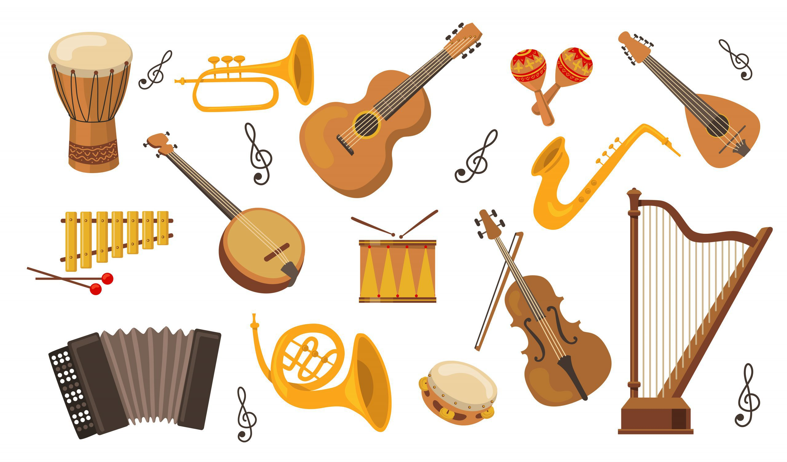
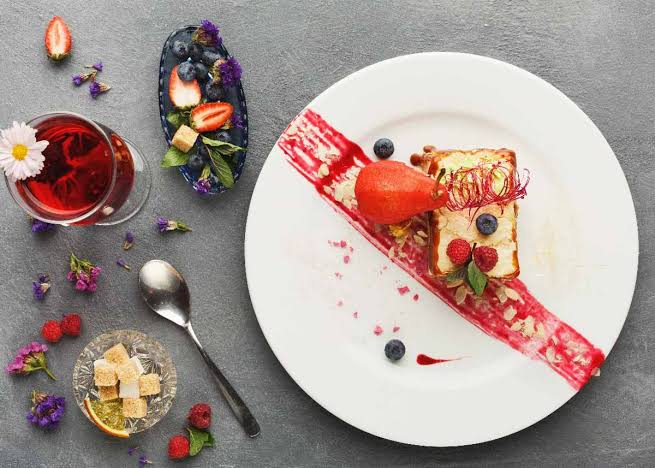
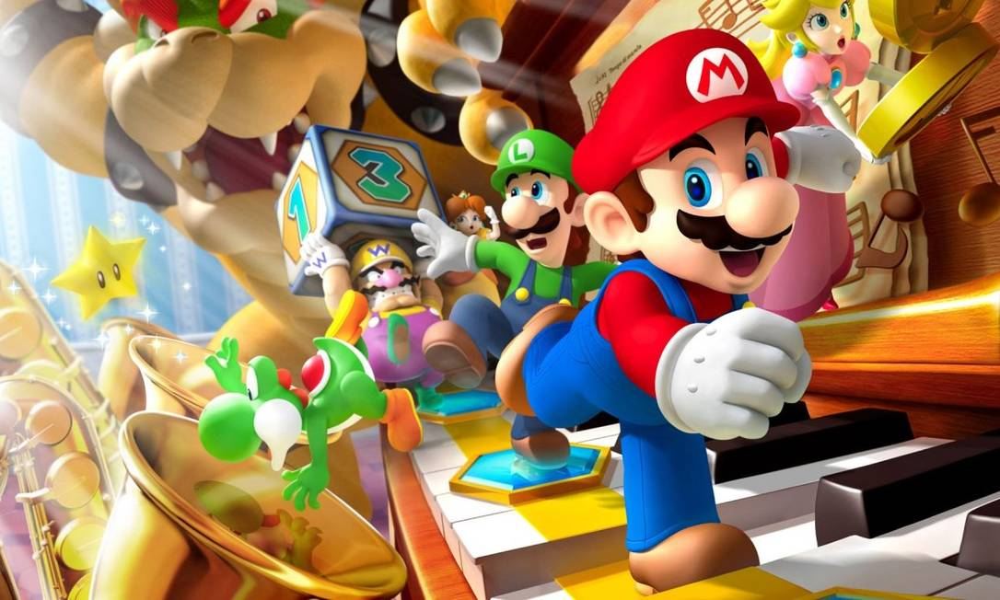

Futebol e Prática de Esportes
Praticar esportes ao ar livre ajuda a manter a saúde em dia e a mente focada.
Publicado em
Programação, Experiências e Cotidiano
Nesta página serão veiculados os meus hobbies e atividades de lazer.
Praticar esportes ao ar livre ajuda a manter a saúde em dia e a mente focada.
Publicado em

Dedicar um tempo diário para leitura expande o vocabulário e traz novos conhecimentos.
Publicado em

Tocar violão e descobrir novas bandas é a melhor forma de se desconectar da rotina.
Publicado em

Capturar cenários naturais e o cotidiano urbano através das lentes de uma câmera.
Publicado em

Aprender novas receitas é um exercício de paciência, criatividade e sabor.
Publicado em

Aventuras digitais que estimulam o raciocínio rápido e proporcionam momentos com amigos.
Publicado em